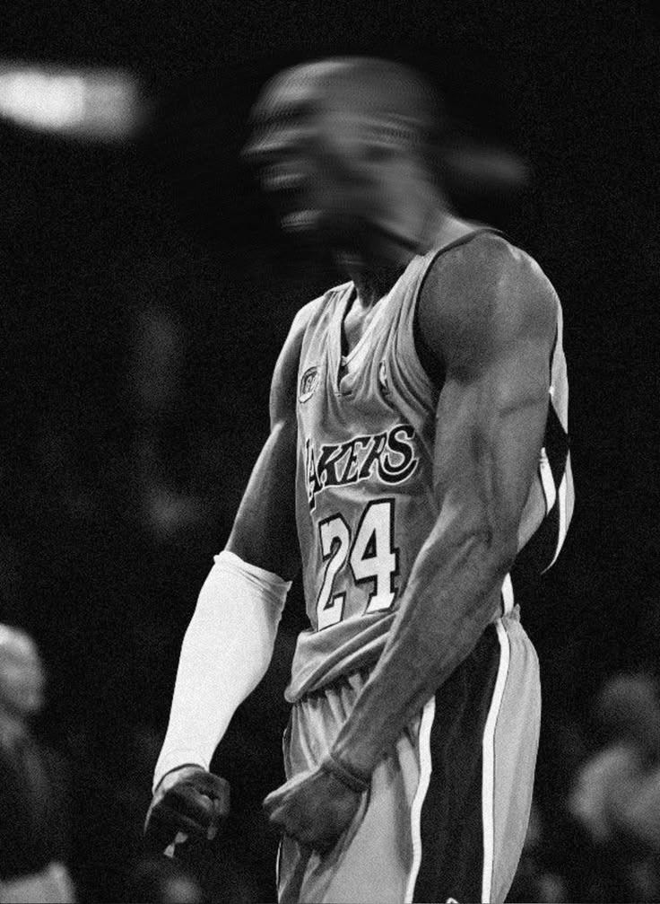

Mamba mentality

La mamba mentality est la philosophie de vie de Kobe Bryant, inspirée du serpent black mamba , symbole
d'agressivité et résilience
Elle prone un travail acharné constant pour progresser chaque jour, sans compromis
Piliers clés
- Obsession du travail:traivailler plus que les autres,sans négocier avec soi-même
- soif d'apprendre:Etudier des mentors,d'autres sports,et chaque défaite comme une leçon
- concentration absolue:Etre à 110% dans l'instant présent, imperméable aux distractions